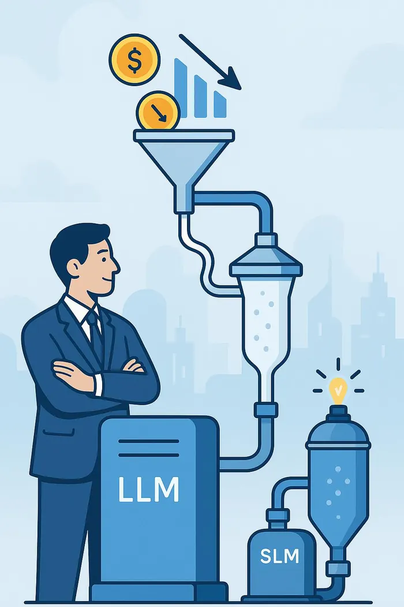
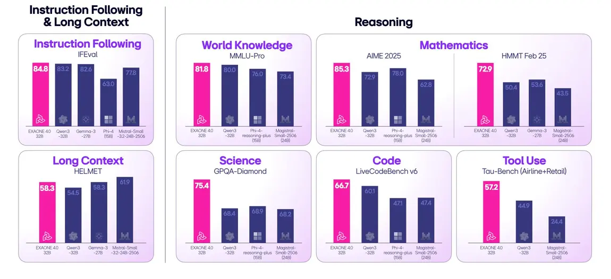
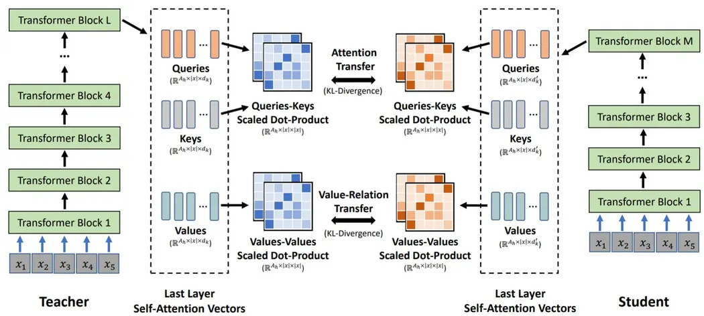
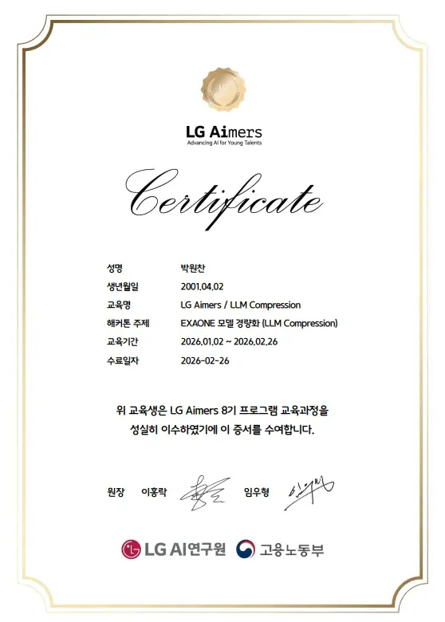
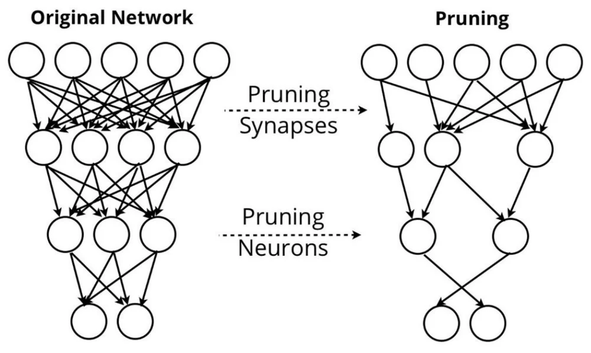
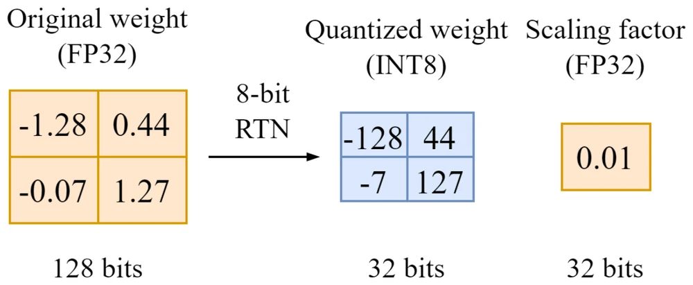

문제 1
GPTQ(W4A16) 단독으로는 압축률에 한계가 있습니다. 이미 4bit까지 줄인 양자화를 더 세게 밀어붙이면 품질이 급격히 떨어질 위험이 있었습니다.
LG AI연구원이 주관하는 전문가 강의로 LLM을 배우고, 실제 EXAONE 모델 경량화 경연으로 실전 경험을 쌓는 프로그램입니다.
02 / 프로젝트 개요
LLM에 대한 전문 교육을 이수한 뒤 주어진 과제는 명확했습니다. 모바일 전용 EXAONE 모델을 만들 것. 성능은 유지하거나 향상시키면서, 모델이 요구하는 코스트는 확 줄여야 했습니다.

03 / 진행한 일
EXAONE 4.0은 추론·수학·코드 벤치마크에서 동급 모델을 앞서는 강력한 모델이지만, 그만큼 모바일에 이식하기에는 많은 코스트가 필요합니다. 성능은 유지하거나 향상시키면서 모델 자체를 경량화해야 했습니다.

GPTQ(W4A16) 단독으로는 압축률에 한계가 있습니다. 이미 4bit까지 줄인 양자화를 더 세게 밀어붙이면 품질이 급격히 떨어질 위험이 있었습니다.
양자화와는 다른 축인 프루닝(SparseGPT)을 추가해 압축 방식을 이원화했습니다. 비트 수를 줄이는 대신, 남길 가중치 자체를 골라내는 것입니다.
프루닝과 양자화를 같이 걸면 오차가 누적되고 증폭됩니다. 순서나 파라미터를 잘못 잡으면 성능이 예상보다 훨씬 크게 떨어질 수 있었습니다.
프루닝으로 확정된 가중치 구조를 기준으로, GPTQ가 남은 가중치의 양자화 오차를 재분배하도록 순서를 맞췄습니다. 두 압축이 서로 상쇄되지 않고 온전히 누적되도록 설계한 것입니다.
04 / 과정
LG AI연구원 전문가들의 온라인 강의로 LLM의 기초부터 실전까지 습득했습니다. 자연어처리와 LLM Agent, 모델 압축(Compressing LLMs), 경량 LLM 연구 동향, LLM Application & Evaluation, EXAONE 모델 구조까지.
배운 압축 기법을 EXAONE 4.0 1.2B에 직접 적용하는 경량화 해커톤을 수행했습니다. GPTQ 기반 baseline(LB 0.5±0.02)에서 출발해 프루닝을 결합하는 방향으로 확장했습니다.


05 / 결과물
EXAONE 4.0 모델에 GPTQ 양자화와 SparseGPT 프루닝을 함께 적용해 경량화를 완료했습니다.


sparsity 35%, 2:4 구조적 마스크, 4bit 양자화. 세 가지 압축을 모두 동시에 적용했습니다.
baseline에서 제외했던 민감 레이어를 다시 포함시키고, 캘리브레이션을 강화해 그 레이어들이 압축을 버티게 하는 전략을 세웠습니다.
06 / 배운 점
압축 기법을 여러 개 겹칠 때는 상호작용을 반드시 검증해야 합니다. A와 B를 동시에 적용하려면 A만, B만, A+B를 모두 비교하는 ablation 과정을 거쳐야 안전합니다.
레이어별 민감도는 균일하지 않습니다. 압축 전후의 activation 분포나 perplexity 기여도를 레이어마다 측정해서 근거를 갖고 결정하는 것이 이상적입니다.
07 / 나의 역량
게임 AI는 결국 유저의 기기 위에서 돌아가야 합니다. 서버 코스트와 온디바이스 성능 사이에서 모델을 다이어트시키는 이 경험은, 게임 속 SLM 기반 NPC와 시스템을 현실적인 비용으로 구현하는 데 바로 이어지는 역량이라고 생각합니다.
기법을 아는 것과 기법들을 안전하게 조합하는 것은 다른 능력입니다. ablation으로 검증하고, 레이어 민감도를 근거로 결정하는 태도로 팀의 모델 경량화와 최적화에 기여하겠습니다.